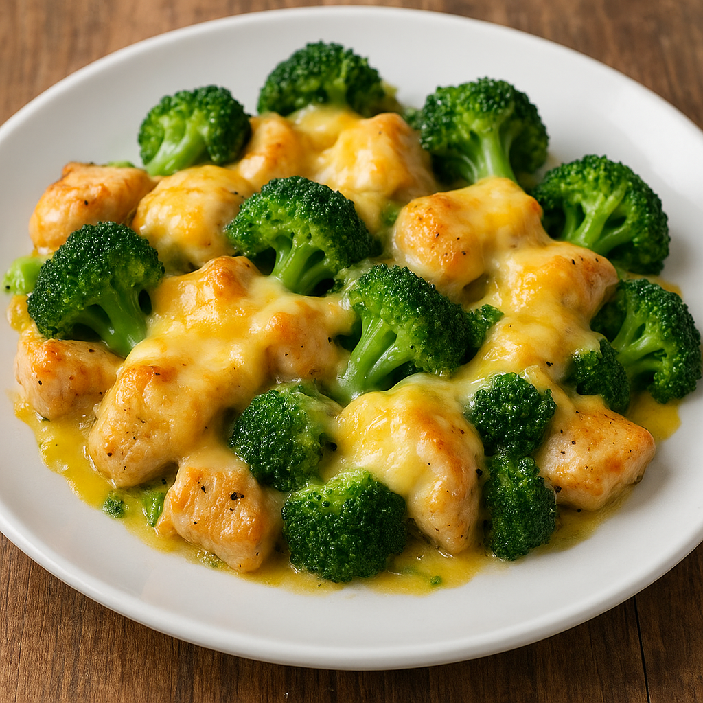

Chicken with Cheese
Home
Chicken with Cheese

A simple, comforting dish made with tender chicken, fresh broccoli, and melted cheese.
This recipe starts by seasoning and sautéing bite-sized pieces of chicken until they are golden and cooked through. Fresh broccoli florets are then lightly steamed or sautéed to keep their bright color and crisp texture. Once both ingredients are ready, they are combined in a skillet or baking dish.
A generous layer of shredded cheese is added on top, allowing it to melt and coat the chicken and broccoli in a creamy, flavorful finish. The result is a quick, wholesome, and family-friendly dish that pairs well with rice, pasta, or a simple salad. It's easy to prepare and perfect for a weeknight meal.
ingredients
- Chicken breast, cut into bite-sized pieces
- Broccoli florets
- Shredded cheese (cheddar or your preferred type)
- Olive oil or butter
- Salt
- Black pepper
- Chicken broth or a splash of water (optional, for cooking the broccoli)
Steps
- Season the chicken with salt, pepper, and optional spices.
- Cook the chicken in a skillet with oil until golden and fully cooked.
- Steam or sauté the broccoli until tender but still bright green.
- Combine chicken and broccoli in the skillet or a baking dish.
- Add shredded cheese on top and let it melt before serving.
Home